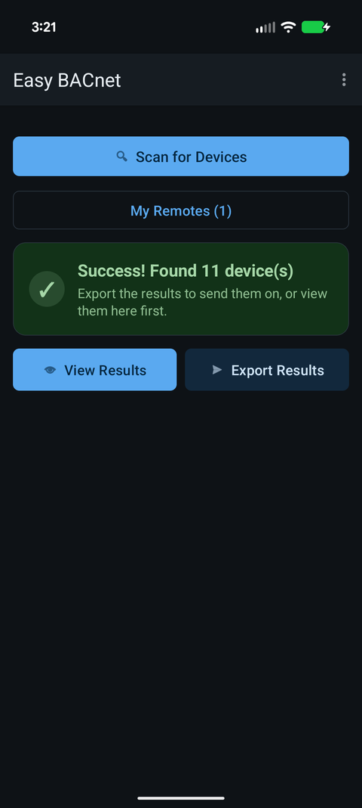

How do I export a BACnet IP points list to Excel or CSV, and what is an EDE file?
Updated 30 September 2026
Scan the network, then export: Easy BACnet
reads every point on every device it found and builds an Excel spreadsheet
(.xlsx) — a device summary on top, then one row per point with Device ID,
Device Name, Device IP, Object Type, Object Number, Point Name, Present Value, Units and
Status. Your phone's share sheet opens so you can email it or save it to Drive or Files. It
opens in Excel, Google Sheets or LibreOffice, and File → Save As → CSV
turns it into a CSV if that is what was asked for. An EDE file (Engineering
Data Exchange) is a more formal, fixed-column spreadsheet that integrators use to import
points into a building management system — the same information, in a set layout.


What people mean by “a points list”
When a vendor, integrator or analytics provider asks for your points list, they want a table of what exists on the equipment: for each object, its name, what kind of object it is, its number, and usually a live value and units. Unlike Modbus, BACnet devices can be asked what they contain — so this list can be built by reading the device, not by hunting for a document. See what is a BACnet IP points list?
Step by step: collect and export from a phone
- Get on the controls network. Join the building's controls Wi-Fi, or plug in with a USB-Ethernet adapter. Turn mobile data off if Wi-Fi says Connected, no internet.
- Scan. Open Easy BACnet, tap Easy BACnet Mode, then Scan for Devices. Wait for Success! Found N device(s) (up to a minute). For controllers on other subnets, add them first with menu → Add device by IP… or set BBMD for remote networks… and scan again — everything in the device list is exported.
- Check it (optional). View Results lists every device; tap one to see its points. Very large controllers load the first 2,000 objects; add any specific object beyond that with Add object by number.
- Export. Tap Export Results. On the free version you are asked Watch a short ad? first (Watch ad / Remove ads / Cancel); if no ad can load, the export just runs. The app re-reads every point list and every present value — the progress box shows Point list: x of y then Values: x of y for each device. Stay in Wi-Fi range until it finishes, or tap Cancel to stop.
- Share or save. The share sheet opens (Send export by email)
with
EasyBACnet_YYYYMMDD_HHMM.xlsxattached, the subject BACnet IP Export and today's date, and a line giving the device and point counts. Pick your email app and add the recipient, or pick Drive, Files or a messenger to keep it. Nothing is sent until you send it.
What the spreadsheet contains
One sheet with two tables, so it reads well on a phone screen and in Excel:
| Section | Columns |
|---|---|
| Device summary (top) | Devices Found count, then per device: Device ID, Device Name, Device IP, Points (how many) |
| Point detail (below) | Device ID, Device Name, Device IP, Object Type, Object Number, Point Name, Present Value, Units, Status |
- Each device gets a bold row of its own in the detail table (Object Type Device), so every controller and its IP is listed even if it returned no points.
- Any point whose Status is not Normal — in alarm, fault, overridden or out of service — is shaded red. See status flags explained.
- Device IDs, object numbers and counts are stored as numbers, so sorting and filtering work straight away. Present values keep the app's formatting (e.g. Active (On) for a binary point) and units use short symbols such as °F, % RH or kW.
- Descriptions and priority arrays are not exported; open a point in the app to see those.
Need a CSV?
Open the .xlsx in Excel and use File → Save As → CSV UTF-8
(Google Sheets: File → Download → CSV). If you only want the point detail
in the CSV, delete the summary rows above the detail header first, so the file has a single
header row — that is what most import tools expect.
Excel/CSV versus EDE — which do they want?
| Easy BACnet export | EDE file | |
|---|---|---|
| What it is | A plain table of the network's devices, objects and live values | A standardised BACnet spreadsheet with fixed columns for import |
| Opens in Excel | Yes (.xlsx; save as CSV if needed) | Yes (it is a spreadsheet/CSV) |
| Best for | “Show me what's on this site”, records, a vendor request, troubleshooting | Bulk-importing points into a BMS or analytics platform to a fixed schema |
| Contains | Names, values, units, status, object IDs, device IPs | Object name, type, instance, and standard EDE columns (present-value fields, units, COV increment, etc.) |
EDE (Engineering Data Exchange) is a convention from the BACnet world for moving a point list between tools in a predictable column order. If someone specifically asks for “an EDE”, they mean that layout. If they just say “send me the points”, a spreadsheet with clear names and values is what they are after — and it is easy to reshape into an EDE template if they later need one.
The value of exporting from the live devices is that it is true: it is what the equipment actually reports today, not what a years-old design document claims. An export built from a real scan is often the most accurate points list a building has. See a vendor asked for my BACnet information.
Privacy
The export is built on your phone and kept in the app's private cache; the app has no server and sends nothing itself. Once you share it, it goes wherever you send it. A points list is a map of a building's controls — send it to a named person, not a shared inbox. Details are in the privacy policy.